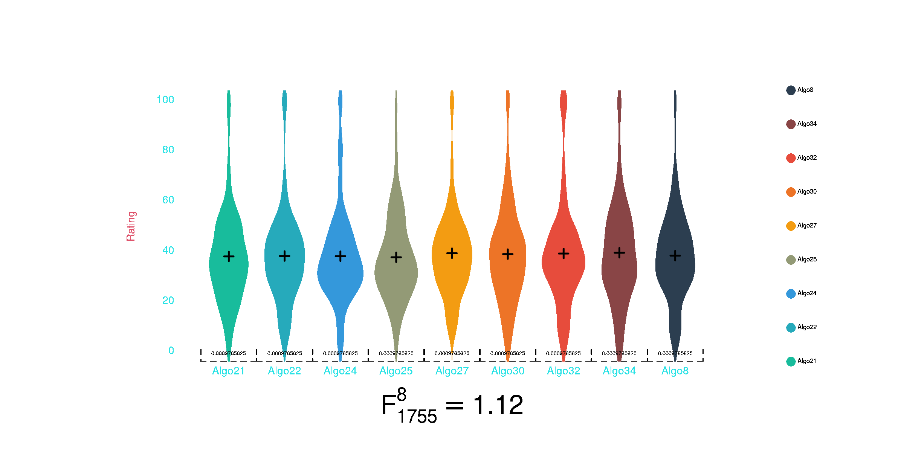
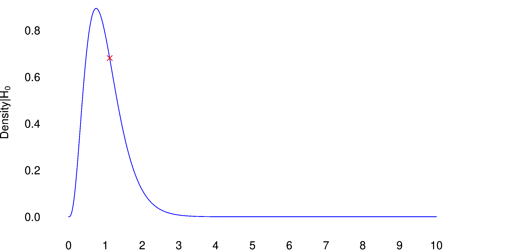
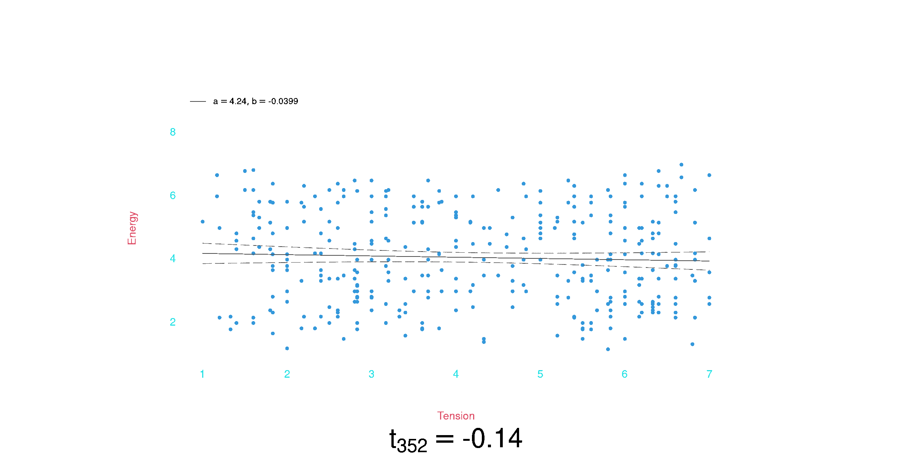
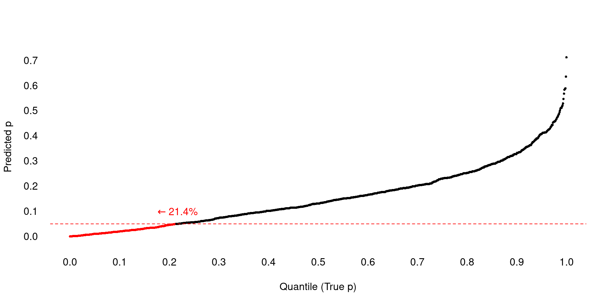
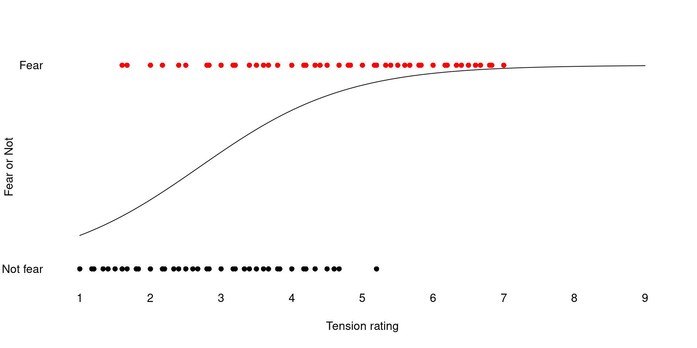

Null Hypothesis Significance Tests
Data Analysis
What is the goal of data analysis?
- To support valid research claims,
- by…
- being rigorously skeptical of our own data and analyses;
- Considering alternative explanations of observed relationships;
- Recognizing and stating our assumptions;
- genuinely trying to falsify our hypotheses.
Null Hypothesis Significance Tests
Motivation
- NHST is…
- A crucial opportunity to falsify our hypotheses;
- the standard approach to experimental statistics across many fields of research;
- A validly-conducted “significant” test is (essentially) required to make a positive claim about your hypothesis.
Core Idea
- The Null Hypothesis (\(H_0\)), is that there are no true relationship between independent and dependent variable(s).
- Even if \(H_0\) is true, apparent relationships may arise purely by random chance.
- If we claim a relationship is real when it is not we make a Type 1 error.
- NHST is a mechanism for limiting Type 1 errors.
Core Method
- Pick an “\(\alpha\) level” (acceptable Type 1 error rate).
- Just kidding; \(\alpha := 0.05\)
- Describe a statistical model of the relationship(s) between experimental variables.
- \(\beta_0 + \beta_1X + \epsilon = Y\)
- Characterize the Null Hypothesis in the context of that model.
- Usually, something like \(H_0: \beta_1 = 0\).
- Gather data.
- Compute probability of observed data, or “more extreme” data, given \(H_0\).
- This is a \(p\) value.
- Evaluate:
- If \(p \leq \alpha\), then result is considered “significant.”
- If \(p > \alpha\) your result is “not significant.”
Interpretation
- If \(p \leq \alpha\),
- you may claim that your hypothesis has been supported by the data.
- If \(p > \alpha\),
- you must acknowledge that the data is not consistent with your hypothesis.
- Your research claim is (tentatively) falsified.
- To argue otherwise will be an uphill battle.
Rationale
Apply NHSTs assures that at most 5% of positive (significant) research claims are Type 1 errors.
- It does not…
- Prove anything, either way.
- Demonstrate that a relationship (effect) is strong or important.
- Tell us about Type 2 errors.
Practical
What does this all look like in practice?
- Determine which “statistical test” is appropriate for your data and \(H_0\).
- Find statistics library which includes this test.
Ris simplest place to look.
- Load data into R/Python/etc.
- Run test on data.
- Interpret output, and put into your paper.
- Is the test significant? (yes/no)
- Include appropriate details.
I’ll now walk through some examples, using R.
- We will start with basic (“baby step”) examples, before finishing with a review of real best practices.
Statistical Tests
To conduct an NHST, we need to compute \(p\) values for our data, given our Null Hypothesis.
- Basically, we need a function \(f(\textbf{IV}_{n\times k},\ \textbf{DV}_{n \times j},\ H_0) = f(Data\ |\ H_0) = p\).
- Where,
- \(IV_k\) is \(k\) independent variables.
- \(DV_j\) is \(j\) dependent variables (\(j := 1\) for this talk).
- \(n\) is the number of data observations.
- Where,
- Every “statistical test” is such a function.
To compute \(p\), all tests compute a test statistic with a known probability distribution.
- For example:
- \(ANOVA(\textbf{IV}_{i\times k},\ \textbf{DV}_{i}) = F\)
- \(F \sim \mathcal{F}(\frac{k - 1}{n - k})\)
- We can compute \(p(F)\), using the \(\mathcal{F}(\frac{k = 1}{n - ik})\) distribution.
- Test statistics can also be simulated using your data (“bootstrapping”).
Model vs Tests
Most statistical tests are based on “parametric” models, modeling relationships between variables and making assumptions about the distribution of error in the data.
- Variants of the general linear model are the most common, by far.
- \(\beta_0 + \beta_1X + \epsilon = Y\)
- \(\epsilon \sim \mathcal{N}(0, \sigma)\)
- Test statistics may either represent particular model parameters (\(t\)) or the improvement of fit when comparing two models (\(F\), \(\chi^2\)).
Other tests are “non-parametric,” making fewer/no assumptions about the data.
- They are less powerful, but more robust (“safer”).
- Examples include…
- Pearson’s \(\chi^2\) test.
- The [Mann-Whitney U test](https://en.wikipedia.org/wiki/Mann%E2%80%93Whitney_U_test].
Choosing a Test
Start with linear models.
- The choice of test depends on the nature of your independent and dependent variables.
- Generally, the general linear model can accommodate any combinations, so we’re always choosing variants of the same thing.
Generally, any combination of independent variables can be used.
- Categorical, numeric, etc.
- The interpretation of model parameters changes, but the test is the same.
- Interactions?
- Covariates.
- Include any covariates that make sense, so the model can control for them.
The main question is the nature of your dependent variable.
- What kind of variable?
- Continuous, real numbers?
- Categories? Ordered categories?
- Rank/Count data?
- What does error look like?
- Is normal distribution plausible model?
In R, we write lm(DV ~ IV).
Additional variables, can be added:
lm(DV ~ IV1 + IV2)lm(DV ~ IV1 + IV2 + IV1:IV2)- The default assumption is that DV is a continuous variable, with normal error.
- The IVs can be any types of variables.
- If the IVs are categorical, we have a \(t\)-test (single binary IV) or ANOVA.
- If the DVs are continuous, we have a linear regression, or multiple regression.
- We can mix categorical/continuous as well.
Examples
Quality Evaluation Data
SiSEC dataset.
- Fourteen participants.
- Nine test conditions (algorithms).
- Fourteen base audio recordings (8 speech, 6 music).
- \(N = 14 * 9 * 14 = 1764\) total ratings.
How do approach this using NHST?
- First things first: what is the Null Hypothesis?.
- Presumed hypothesis is that some algorithms perform better than others.
- Therefore, \(H_0\): All nine algorithms actually perform equally well.
- This called the “omnibus null hypothesis.”
Ratings range from 0 to 100.
- Continuous numeric DV, with plausibly normal distribution.
Main IV is categorical with nine levels (nine algorithms).
- Possible covariate is the type of stimuli: music vs speech (binary variable).
- There could plausibly be interactions between algorithm and target/type.
- The Null Hypothesis would have these interactions as 0.
- This variant of the linear model is called ANOVA.
- \(9\times 4 \times 2\) ANOVA (though not fully factorial).
- The ANOVA is based on a \(F\) test, comparing the fit of the model with/without each variable.
- \(H_0\) is that the mean-value for the DV is the same in all nine IV levels.
ANOVA
If \(H_0\) true, ratio of between-group and with-group variance should follow the \(F(\frac{df_1}{df_2})\) distribution.


| Df | Sum Sq | Mean Sq | F value | Pr(>F) | |
|---|---|---|---|---|---|
| Algorithm | 8 | 178,961.85 | 22,370.23 | 89.39 | 1.94e-124 |
| Type | 1 | 27,335.74 | 27,335.74 | 109.23 | 7.7e-25 |
| Algorithm:Type | 8 | 24,305.39 | 3,038.17 | 12.14 | 5.2e-17 |
| Residuals | 1,746 | 436,948.47 | 250.26 |
- As we suspected, the omnibus Null Hypothesis does not seem very plausible.
Emotion Data
Eerola’s Music and emotion stimulus sets consisting of film soundtracks.
- Stimuli with twelve target emotions
- Happy, Sad, Tender, Fear, Anger, Surprise, High Valence, Low Valence, High Energy, Low Energy, High Tension, Low Tension
- Eight rated emotional dimensions
- Valence, Energy, Tension, Anger, Fear, Happy, Sad, Tender
- Scale of 1–9
Hypothesis: Perceived energy is related to tension.
How do approach this using NHST?
- \(H_0\): There is no relationship between energy and tension ratings.
Energy ratings from 0 to 9.
- Sort-of continuous numeric DV, with (sort of) plausibly normal distribution?
Main IV is tension, but all eight emotion ratings are correlated:
| Valence | Energy | Tension | Anger | Fear | Happy | Sad | Tender | |
|---|---|---|---|---|---|---|---|---|
| Valence | 1.00 | |||||||
| Energy | -0.40 | 1.00 | ||||||
| Tension | -0.91 | 0.58 | 1.00 | |||||
| Anger | -0.71 | 0.48 | 0.73 | 1.00 | ||||
| Fear | -0.86 | 0.35 | 0.83 | 0.68 | 1.00 | |||
| Happy | 0.56 | 0.23 | -0.46 | -0.42 | -0.55 | 1.00 | ||
| Sad | 0.32 | -0.69 | -0.41 | -0.41 | -0.38 | -0.36 | 1.00 | |
| Tender | 0.76 | -0.60 | -0.83 | -0.53 | -0.64 | 0.25 | 0.34 | 1.00 |
- These correlations could lead to spurious results.
- We can control for them by including all seven independent predictors;
- This isolates the effect of tension, independent of other ratings.
- There could plausibly be interactions as well…
- This variant of the linear model is called Multiple Regression.
- If we don’t include interactions, we can test the effect using the \(t\) statistic associated with the tension variable.
- \(H_0\) is that the “slope” between tension and energy is zero (\(b_{tension} = 0\)).
- However, in more complex cases, it would be easier to again use an \(F\) test, comparing the fit of the model with/without each variable.
- If we don’t include interactions, we can test the effect using the \(t\) statistic associated with the tension variable.
Linear Regression
If \(H_0\) is true, standardized regression coefficient should follow Student’s \(t(df)\) distribution.


| term | estimate | std.error | statistic | p.value | conf.low | conf.high |
|---|---|---|---|---|---|---|
| (Intercept) | 0.89 | 0.60 | 1.47 | 0.1431626 | -0.30 | 2.08 |
| valence | 0.30 | 0.07 | 4.44 | 0.0000121 | 0.17 | 0.44 |
| tension | 0.61 | 0.07 | 8.52 | 0.0000000 | 0.47 | 0.75 |
| anger | 0.16 | 0.03 | 5.09 | 0.0000006 | 0.10 | 0.23 |
| fear | -0.16 | 0.04 | -3.84 | 0.0001477 | -0.24 | -0.08 |
| happy | 0.23 | 0.04 | 5.63 | 0.0000000 | 0.15 | 0.31 |
| sad | -0.23 | 0.04 | -6.19 | 0.0000000 | -0.30 | -0.16 |
| tender | -0.19 | 0.04 | -5.19 | 0.0000004 | -0.27 | -0.12 |
NHST pitfalls
Let’s explore some potential, known challenges with NHST.
What if we want to know if the best algorithm is significantly better than the other aglorithms as a whole?
Call:
lm(formula = fit)
Residuals:
Min 1Q Median 3Q Max
-47.452 -10.557 -1.557 9.035 66.035
Coefficients:
Estimate Std. Error t value Pr(>|t|)
(Intercept) 40.5565 0.7094 57.170 < 2e-16 ***
BestAlgoTRUE 21.8958 2.1282 10.288 < 2e-16 ***
Typespeech -6.5911 0.9384 -7.023 3.08e-12 ***
BestAlgoTRUE:Typespeech -12.2719 2.8153 -4.359 1.38e-05 ***
---
Signif. codes: 0 '***' 0.001 '**' 0.01 '*' 0.05 '.' 0.1 ' ' 1
Residual standard error: 18.39 on 1760 degrees of freedom
Multiple R-squared: 0.1084, Adjusted R-squared: 0.1069
F-statistic: 71.32 on 3 and 1760 DF, p-value: < 2.2e-16- This is significant.
- However, there is a problem…
- We did not identify this “best algorithm” a priori.
- And the NHST is sensitive to this.
Imagine that the Null Hypothesis were true: all algorithms performed equally well.
- Every time we sample responses, one algorithm will perform best in the sample.
- By picking this one out, we are (by definition) biasing the result.
We can simulate this:
In general, NHST is sensitive to the exact procedure you use.
- Any procedural decisions are made post-hoc, they can affect the validity of results.
- I.e., if you use the data to to make decisions about stats/tests, the \(p\)-value won’t be accurate.
Common pitfalls:
- Post-hoc stopping condition
- If you decide when to stop collecting data based on the data.
- Post-hoc comparisons
- When you decide which comparisons to make/test.
Multiple comparisons.
A particularly well known problem is the problem of multiple tests.
- Anytime you conduct multiple NHSTs, the chance that at least one test will be significant is higher than \(\alpha\).
A common technique is to conduct “pair-wise” \(t\)-tests between every category, so we would know exactly which algorithms perform better than others.

- In this case there would be 36 possible comparisons.
If we simulate this

- More than forty percent of our (Null Hypothesis) simulations have at least one significant tests.
- This is the “family-wise error rate”
- This, if we conducted 36 significance tests and consider one significant result to be the basis to reject the Null Hypothesis, we would make a Type 1 error more than 40% of the time!
Correcting for Multiple Comparisons
We can “correct” for multiple tests by adjusting our \(p\)-values (or \(\alpha\) level) accordingly.
- The naive Bonferroni correction is simply to use \(\frac{\alpha}{T}\), where \(T\) is the number of tests.
- This highly conservative (overly cautious), because our tests are not statistically independent from each other.
- There are many other approachess, such as Tukey’s Method.
The main lesson is that, whenever you conduct multiple NHST tests, you need to take them with an extra skeptical grain of salt.
- If you conduct many tests (like hundreds or thousands), some of those will have \(p < .05\).
Assumptions
We might hypothesis that happiness and sadness ratings should be negatively correlated.
- This could be a simple linear regression.
- However…
The distribution of the errors is not plausible normal.
- Too many 1s.
You could rethink how to express the hypothesis in a way that is more consistent with the data.
- Logistic regression, use happiness to predict whether sad rating is or isn’t 1.
Call:
glm(formula = NotSad ~ happy, data = emote)
Coefficients:
Estimate Std. Error t value Pr(>|t|)
(Intercept) 0.72753 0.03936 18.484 < 2e-16 ***
happy -0.05287 0.01308 -4.041 0.0000652 ***
---
Signif. codes: 0 '***' 0.001 '**' 0.01 '*' 0.05 '.' 0.1 ' ' 1
(Dispersion parameter for gaussian family taken to be 0.2297146)
Null deviance: 85.989 on 359 degrees of freedom
Residual deviance: 82.238 on 358 degrees of freedom
AIC: 496.1
Number of Fisher Scoring iterations: 2Data Independence
All statistical models assume that each individual data point is statistically independent of every other data point.
- This assumption is often violated in experimental research.
Repeated measures
The most common source of data dependence is repeated measures:
- Repeated measurements from the same human participants.
- Repeated responses to the same stimuli (“items”).
Take a look at your quality ratings again:
By participant

- Participant 62 tends to give much higher ratings than participant 45.
By item
with(SiSEC, draw(bg = '#ffffff00', factor(Target), Ratingscore), pch = 16,
xlab = 'Target', ylab = "Rating")
- Again, the specific measurement items vary quite a lot in average rating, across all algorithms.
In a well-designed experiment like this, every combination of all levels is measured.
- I.e., every participant heard every item processed by every algorithm.
- This “full factorial” design minimized the impact of data dependence on our results.
- However, fully-factorial designs are not always feasible.
Even in a fully-factorial design, data dependence can be problematic.
- If I inspect five data points from a given participant, I can use that data to guess what their other data points will be.
- Thus, each individual data point communicates less information.
- Thus, the amount of information in the data is actually less than the apparent sample size.
- This can make statistical models underestimate the true uncertainty of estimated statistics.
Random-Effects Models
A generalized solution the problem of data dependence is through random effects models.
- In these models, multiple sources of random error are explicitely modeled:
- A random sample of participants.
- A random sample of measurement items.
- Within participants/items, random residual error.
- We can represent:
- variation in baselines between participants/items using random intercepts.
- variation in the effects of independent variables using random slopes.
- We can use the
lme4package to fit random-effects models for various versions of the GLM.
We can thus conduct a best-practice version of our omnibus ANOVA test.
- The difference between algorithm ratings is still statistically significant.
- The \(F\) statistic for this new model (\(F \approx 10\)) is much smaller than for the naive ANOVA we conducted earlier (\(F \approx 80\)), because this model more accurately reflects the true uncertainty in the data.
- We’ve been good skeptics!
Non-random dependence
Another possibility is for data-dependence to be non-random.
For example, we might look at how participants’ ratings evolved over the course of their experimental session and see something like:
- Participants’ ratings tended to get higher over time!1
- The data is autocorrelated, with \(r =\) 0.18 at lag 1.
- As before, it means each data point contains less unique information, because they can be predicted from past ratings.
We an explicitly incorporate this autocorrelation into our model:
| term | df | sumsq | meansq | statistic | p.value |
|---|---|---|---|---|---|
| Algorithm | 8 | 173211.38 | 21651.4231 | 88.97879 | 0 |
| Type | 1 | 28165.02 | 28165.0216 | 115.74710 | 0 |
| PreviousRating | 1 | 13166.77 | 13166.7657 | 54.11020 | 0 |
| Algorithm:Type | 8 | 22531.72 | 2816.4655 | 11.57456 | 0 |
| Residuals | 1731 | 421208.41 | 243.3324 | NA | NA |
Effect Size
A statistically significant effect tells us nothing about how strong an effect is.
- With enough data (or little variability) even small effects can be significant.
Effect size should be reported independently of statistical tests.
- Use graphs to visualize effect size in meaningful way.
- Report standardized metrics:
- \(r\), \(R^2\), \(\beta\), coefficient of variation, Coen’s \(d\)
- Report non-standardized metrics:
- \(b\)
Do not use \(p\) values as effect-size metrics.
- \(p < .01\), \(p < .001\), \(p < .0000001\), etc.
- This is a common practice, but \(p\) values are bad inferential statistics, and bad measures of effect size.
Summary
- NHST is important first step in evaluating experimental results
- Find model appropriate for your variables
- Look out for dependent data
- Incorporate random effects to account fo repeated measures.
- Explicitly model other sources of dependence.
- Post-hoc
- Do not make decisions based on data.
- Stopping condition
- Post-hoc comparisons
- Correct for multiple tests
- Do not make decisions based on data.
ISMIR 2024: Humans at the Center of MIR — Null Hypothesis Significance Tests